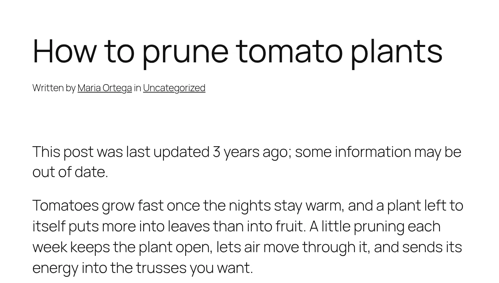
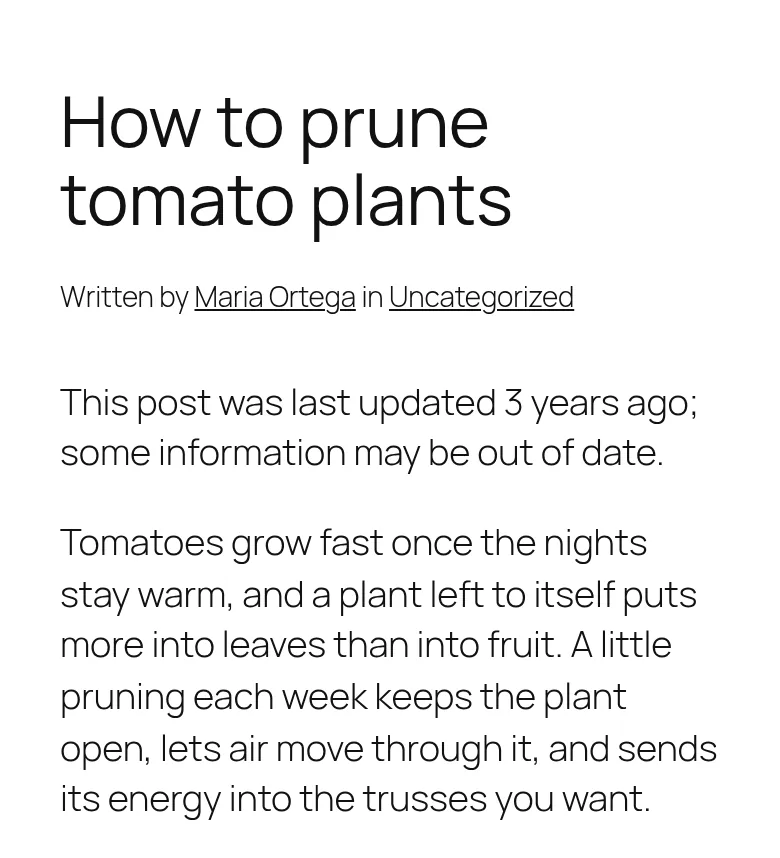

WordPress 6.0 or later, PHP 7.4 or later. No account, no external service, no build step.

On a post nobody has touched for three years. Screenshot from a test site running WordPress 7.1 and the Twenty Twenty-Five theme.
Old posts keep getting read long after they stop being right.
A tutorial from three years ago still ranks, still gets shared, and still recommends a setting that no longer exists. Content Freshness does four small things about that.
For readers
A notice on outdated posts
A post that has not been updated for longer than you allow starts with a short note: “This post was last updated 3 years ago; some information may be out of date.”
It appears only on single posts of the “post” type, in the post's main content. Pages, archives and lists of posts are left alone, and so is a post shown in a related-posts block further down the page.

The same post on a phone. The notice is a plain paragraph, so it takes your theme's typography; it has the class mwpd-content-freshness-notice for styling. Screenshot.
For editors
A “Last updated” column
The Posts list gets a column that says how long ago each post was last updated. Outdated posts are marked, and the column sorts by last update, so the stalest ones are a click away.
The Posts list at the default of 365 days, with some of WordPress's own columns hidden through Screen Options. Screenshot.
For editors
A weekly digest
Once a week, everyone who can edit other users' posts gets an email listing the published posts that have gone longest without an update, up to 20, each linked to its editor. Each person gets their own email, so nobody sees the others' addresses.
When nothing is stale, nothing is sent.
[Field Notes] Posts that need a refresh
These posts have not been updated for a while. Readers now see a notice that they may be out of date.
Building a raised bed from reclaimed timber – last updated 5 years ago
How to prune tomato plants – last updated 3 years ago
Seed starting calendar – last updated 3 years ago
Choosing a rain barrel – last updated 1 year ago
See all posts by last update
The digest the same test site sent, captured instead of delivered. The subject and body are the plugin's own; the mail-client frame is drawn for this page.
For site owners
One setting
Under Settings › Reading, choose after how many days a post counts as outdated, from 1 to 36500. The default is 365, a year.
A value outside that range is reported on the page (“Enter a whole number of days from 1 to 36500. Nothing was changed.”) and the setting keeps its current value.
Settings › Reading. Screenshot.
Installation
The plugin needs nothing but WordPress and PHP. Upload it, activate it, and the defaults work.
From the zip
Download content-freshness.zip from the latest release on GitHub.
In your dashboard, go to Plugins › Add New › Upload Plugin, choose the zip and install it.
Activate Content Freshness. Optionally, change Posts become outdated after under Settings › Reading.
Or clone the repository into wp-content/plugins/content-freshness and activate it. No composer install is needed: the plugin brings its own autoloader.
$ cd wp-content/plugins
$ git clone https://github.com/mwpd/content-freshness.git
On activation
The weekly digest is scheduled. The first one goes out a week later, not at once.
On deactivation
The digest stops, the notice and the column go away, and your setting is kept.
On deletion
The setting is removed too, from every site of a network. The plugin stores one option and schedules one weekly event per site, and removes both.
Configuration
There is one setting, and most sites never need more. For the rest, two things can be changed without touching the plugin.
Who gets the digest
Every user who can edit other users' posts: Editors and Administrators, unless your roles were changed. It is sent by WP-Cron through wp_mail(), so whatever handles email on your site sends it.
The markup
The notice, the column cell, the setting field and the email body are templates in the plugin's views/ directory. To change one, copy it into a content-freshness/ directory of your theme at the same path, for example content-freshness/views/outdated-post-notice.php, and edit it there. A child theme's copy wins over the parent theme's, which wins over the plugin's.
The rule
Every feature asks one question, “is this post outdated?”, through one interface. A developer can replace the rule for all of them at once, for example to leave an evergreen category alone. How that works is below.
Questions
When does a post count as outdated?
When its last update is older than the number of days set under Settings › Reading, 365 by default. Publishing a post counts as its first update; any later save counts as a new one.
Who receives the weekly digest?
Every user who can edit other users' posts: Editors and Administrators, unless your roles were changed. Each receives a separate email, so nobody sees the others' addresses.
The digest does not arrive. What can I check?
The digest is sent by WP-Cron through wp_mail(). On a site with little traffic, WP-Cron runs late; a real cron job that calls wp-cron.php fixes that. If other email from your site does not arrive either, set up an SMTP plugin.
Which posts does the notice appear on?
Only on single posts of the “post” type, and only in the post's main content. Pages, archives and lists of posts are left alone.
Can I change how the notice looks?
The notice has the class mwpd-content-freshness-notice for styling. To change its markup, copy views/outdated-post-notice.php from the plugin into your theme as content-freshness/views/outdated-post-notice.php, and edit it there.
Can I change the rule for what counts as outdated?
Yes, with a little code. The notice, the column and the digest all ask one FreshnessPolicy interface. Bind your own implementation through the mwpd.content_freshness.bindings filter, and all three use it. See below.
What happens when I deactivate or delete the plugin?
Deactivating stops the digest and hides the notice and the column, and keeps your setting. Deleting the plugin also removes the setting, from every site of a network.
Requires
WordPress 6.0 or later, tested up to 7.1. PHP 7.4 or later.
Stores
One option, mwpd_content_freshness_max_age, and one weekly cron event. Both are removed when you delete the plugin.
Outside services
None. No account and no tracking. The digest goes out through your site's own wp_mail().
Content Freshness is the worked example of the scaffold that accompanies Modern WordPress Plugin Development. Four features in four different parts of WordPress, and none of them knows the others exist.
Each feature is one service. Each service implements only the small capability interfaces that say where and when it acts, and the scaffold's infrastructure works out the rest. The composition root lists them:
Hooks the cron callback in every request, schedules the weekly event in each site an activation reaches and in new sites of a network, and clears it in each site a deactivation reaches and on uninstall.
Table 1. The four services and what each declares.
On the front end of a single post, only two of the four services are ever built. On the Posts list, three. The others are not skipped by an if somewhere: their own static is_needed() or registration action tells the plugin, before anything is constructed.
The notice came first. The column, the setting and the digest were each added in their own commit, and each of those commits added its own service and a few lines to the composition root, without changing the services before it.
Changing the rule
No feature reads the option itself. They all ask FreshnessPolicy, and its one implementation, OptionFreshnessPolicy, reads the option once per request and turns it into a MaxAge value. To use your own rule, bind the interface to your class through the plugin's injector filter, from a plugin or must-use plugin:
Listing 2From the README. My_Freshness_Policy is a class you would write, implementing is_outdated(), age_of() and outdated_before().Hypothetical class
The notice, the column and the digest all use it from then on; none of them changes. The digest asks the database for posts last updated before the policy's outdated_before(), then lets is_outdated() decide about each one, so a rule that leaves some old posts out applies to the email too.
Development
$ composer install
$ composer test # unit, integration and architecture tests
$ composer lint # PHPCS, PHPStan (level max) and Psalm (level 2)
$ npm ci && npm run e2e # WordPress in Docker through @wordpress/env
The end-to-end tests install the plugin as a site would, without vendor/, and check the notice, the column, the setting, the digest, activation, deactivation and uninstalling. The rules for contributing, by hand or with a coding agent, are in AGENTS.md.
See the whole argumentThe scaffold's page walks through this plugin feature by feature: what each service declares, what each commit changed, and how the architecture checks keep it that way.
Let your old posts say so.
One upload, one optional setting, and readers stop taking three-year-old advice at face value.